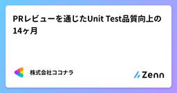
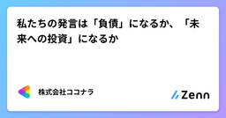
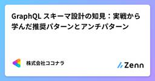
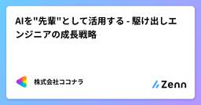
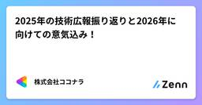
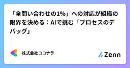
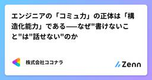
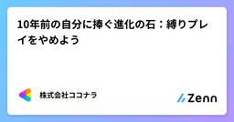
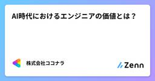
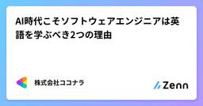

株式会社ココナラさんのフィード
https://zenn.dev/coconala
株式会社ココナラのテックブログ用アカウントです。 ココナラに所属するエンジニアが多様な記事を執筆して公開していきます。 採用情報はこちら → https://coconala.co.jp/recruit/engineer ココナラWebサイト→ https://coconala
フィード

PRレビューを通じたUnit Test品質向上の14ヶ月
株式会社ココナラさんのフィード
こんにちは。株式会社ココナラ QAグループの鈴木(まるちゃん)です。こちらは株式会社ココナラ Advent Calendar 2025 13日目の記事です。 はじめに!「Unit Testが大事なことはわかった」いろいろな場面でUnit Testの重要さを説く場面が多くなってきたと感じます。実際にUnit Testを書き始めた、もしくはUnit Testを見直したチームも多いと思います。弊社も例に漏れず、2024年1月からUnit Testの整備を続けてきました。そして2025年9月、最も積極的に取り組んだAチームで障害密度52.8%削減、本番障害数66.7%削減という成...
1日前

私たちの発言は「負債」になるか、「未来への投資」になるか
株式会社ココナラさんのフィード
こんにちは。株式会社ココナラのマーケットプレイス開発部 Web開発グループ バックエンド開発チーム所属のさいぴーです。こちらは株式会社ココナラ Advent Calendar 2025 12日目の記事です。 はじめに突然ですが、私はコミュニケーションに関して「気にしすぎる」タイプの人間です。この言い方で相手は傷つかないだろうか。あの発言は誤解を生まなかっただろうか。さっきのSlackの返信、冷たく感じられなかっただろうか。そんなことを考えてしまうことが1日に何回、何十回もあります。そこで、他の人はどうやってコミュニケーションをとっているのだろうか、と観察するようになりました...
2日前

GraphQL スキーマ設計の知見：実戦から学んだ推奨パターンとアンチパターン
株式会社ココナラさんのフィード
こんにちは。株式会社ココナラ 募集部所属の開発エンジニア みん です。2025年5月にココナラで新しい スカウト機能 を公開した後、バックエンドの GraphQL スキーマに対してリファクタリングを実施しました。この記事の位置づけ: 実装の詳細ではなく、GraphQL スキーマ設計の思想と原則に焦点を当てた内容です。実践経験から学んだ設計パターンとアンチパターンを整理し、長期的に保守しやすいスキーマを構築するための指針を提供します。 はじめに：なぜスキーマ設計がこんなに重要なのか?GraphQL の世界では、スキーマこそが API 契約です。単なる型宣言ではなく、フロントエン...
3日前

AIを"先輩"として活用する - 駆け出しエンジニアの成長戦略
株式会社ココナラさんのフィード
株式会社ココナラ 技術戦略室の いっちー です。本稿は株式会社ココナラ Advent Calendar 2025 11日目の記事です。 はじめに私はリードエンジニアとして日々開発に携わっていますが、最近ふと考えることがあります。「もし自分が今、駆け出しエンジニアだったら、AIとどう付き合っていくだろう？」GitHub Copilot、ChatGPT、ClaudeなどのAIツールが当たり前のように使われる時代になりました。これらは間違いなく強力な武器です。しかし同時に、駆け出しエンジニアにとっては諸刃の剣でもあります。AIに頼りすぎて、基礎が身につかないのでは？かといって...
3日前

2025年の技術広報振り返りと2026年に向けての意気込み！ 1
1
株式会社ココナラさんのフィード
こんにちは！株式会社ココナラのHead of Informationの ゆーた（@yuta_k0911）です。技術広報 Advent Calendar 2025 シリーズ1 11日目の記事です。株式会社ココナラ 2/2 Advent Calendar 2025 11日目の記事も兼ねています。 2024年の技術広報振り返りサマリ2024年のアドベントカレンダーで振り返り記事を書いていたので、その内容を抜粋します。https://zenn.dev/coconala/articles/676673e4a788a12023年と2024年を比較したデータになりますが、以下のとおり...
3日前

「全問い合わせの1%」への対応が組織の限界を決める：AIで挑む「プロセスのデバッグ」
株式会社ココナラさんのフィード
こんにちは、えっぐです。ココナラのサーバーサイドエンジニアとして、施策開発や技術施策から障害対応、システム運用まで幅広く取り組んでいます。この記事は 株式会社ココナラ Advent Calendar 2025 10日目の記事です。 「全問い合わせの1%」への対応が組織の限界を決める：AIで挑む「プロセスのデバッグ」 はじめに：開発の手を止める「1%の問い合わせ」とどう向き合うかエンジニアの皆さん、日々の「割り込み」に脳のメモリを食いつぶされていませんか？私たちエンジニアの元に届く問い合わせは、件数だけで見れば全体の1%程度かもしれません。しかし、この「1%」こそが厄介...
4日前

エンジニアの「コミュ力」の正体は「構造化能力」である——なぜ"書けないこと"は"話せない"のか 1
株式会社ココナラさんのフィード
こんにちは。株式会社ココナラ 技術戦略室に所属している デミオ です。こちらは株式会社ココナラ 2/2 Advent Calendar 2025 10日目の記事です。 導入：あなたは「パースエラー」の発生源になっていないか？前回の記事（Day 5）では、エンジニアに必要な読解力を 「カオスな情報を脳内で構造化し、デコード（解読）する力」 と定義しました。「なんとなく分かった気がする」という曖昧な状態（パースエラー）の発生を検知し、情報を正確にインプットする技術について解説しました。https://zenn.dev/coconala/articles/engineer-rea...
4日前

10年前の自分に捧ぐ進化の石：縛りプレイをやめよう 1
株式会社ココナラさんのフィード
こんにちは！株式会社ココナラの 大瀧貢です。データやAIと向き合う世界で奮闘すること10年、何度か「非連続的な成長を遂げたな」と自分自身で感じた瞬間がありました。私自身は経験から学んでしまった部分も多いのですが、 「10年前の自分が読んだら、成長に必要な経験値をカットできたかもな」と思える考え方を記事としてまとめてみます。読んだ方が悩みを解決し、明日から望む自分になれる...「進化の石のような記事」にできたら、この上ない幸せです。※進化の石って、いまでも通じる言葉なのでしょうか...こちらは株式会社ココナラ Advent Calendar 2025 9日目の記事です。 縛...
5日前

AI時代におけるエンジニアの価値とは？ 2
株式会社ココナラさんのフィード
AI時代におけるエンジニアの価値とは？こんにちは、大塚 泰成と申します。ココナラのサーバーサイドエンジニアとして色んなプロジェクトに携わってます。この記事は 株式会社ココナラ Advent Calendar 2025 8日目の記事です。 はじめに (※注意)AI時代におけるエンジニアの価値は以下のようなものであると聞いたことがあります。抽象的な課題に対しての設計力事象の定義やビジネスサイドと技術の橋渡し生成されたコードのレビューを行える能力もちろんこういった議論も重要ですが、これらは遠からずAIが高いレベルで実行可能になる領域だと感じています。ですので、...
6日前

AI時代こそソフトウェアエンジニアは英語を学ぶべき2つの理由
株式会社ココナラさんのフィード
今日が誕生日のnu2 です。こちらは株式会社ココナラ Advent Calendar 2025 7日目の記事です。 冒頭：3行まとめ（TL;DR） この記事の要約結論: AIを高度に使いこなしたいなら、翻訳機能に頼らず英語で直接指示を出した方が幸せになる。理由1（量）: LLMの学習データの大半は英語であり、英語で思考させた方が推論精度が高い。理由2（構造）: 英語の文法はRubyなどのコード構造と酷似しており、バグのない「擬似コード」として機能する。 はじめに：翻訳ツールがあれば「十分」でしょうか？「DeepLやChatGPTの翻訳機能がこれだけ進化すれ...
7日前

なぜAIは企画書を書けないのか？ CursorをPdMの相棒にするために
株式会社ココナラさんのフィード
はじめにこんにちは！株式会社ココナラのマーケットプレイス開発部 Web開発グループ バックエンド開発チーム所属のさいぴーです。こちらは株式会社ココナラ Advent Calendar 2025 6日目の記事です。ココナラでは現在、プロダクト開発のスピードを上げるため「AX推進（AIトランスフォーメーション推進）」に取り組んでいます。その一環として、私はPdM向けのAI活用環境を整備するプロジェクトを担当しています。本記事では、「AIに事業ドメインを教える」というアプローチで、PdMの相棒となるAI環境を作った話を紹介します。この記事を読むと：AIに「何を」教えればいい...
8日前

エンジニアに必要な「読解力」とは？ 技術文書を構造化して"秒"で理解する技術
株式会社ココナラさんのフィード
こんにちは。株式会社ココナラ 技術戦略室に所属している デミオ です。こちらは株式会社ココナラ Advent Calendar 2025 5日目の記事です。 導入エンジニアの日常業務を振り返ってみてください。IDEでコードを書いている時間よりも、画面上の文字を「読んでいる」時間の方が圧倒的に長くありませんか？技術ドキュメント、仕様書、APIリファレンス、GitHubのIssue、そして他人のコード。これら膨大なテキストデータを素早く、かつ正確にインプットできるかどうかが、エンジニアとしての生産性と処理効率（スループット）を決定づけます。ここで重要なのは、ただ文字を目で追うこ...
9日前
プロジェクトはなぜやめられないのか
株式会社ココナラさんのフィード
こちらは株式会社ココナラ Advent Calendar 2025 4日目の記事です。みなさんこんにちは、CITチームのま。です。一応エンジニアなんですが、今回はまったくエンジニアっぽくないことを書き記してみます。 背景私は、コーポレートITの仕事に10年以上携わりながら、経営学を学び修士号を取得しました。大学院で最も印象に残ったのが「行動経済学」の授業です。この学問は一部「人間の非合理性」を扱います。自分の経験を振り返る中で、人が最も合理的な判断を下しにくい場面は何かと考えた結果、それは「プロジェクト（以下、PJ）をやめる判断」と考えました。読者のみなさんも、「あの時、や...
9日前
IaCコード管理の歴史
株式会社ココナラさんのフィード
こんにちは！インフラ・SREチームマネージャーのよしたくです。こちらは株式会社ココナラ Advent Calendar 2025 3日目の記事です。 はじめに「Terraformのディレクトリ構成、どうするのが正解？」これは全SREが一度は通る道であり、そして未だに議論が絶えないテーマではないでしょうか。ココナラでも、組織の拡大やフェーズの変化に合わせて、IaC（Infrastructure as Code）の管理方法を何度も変化させてきました。本記事では、ココナラにおけるTerraformコード管理がどのような変遷を辿ってきたのか、その歴史をかんたんに紹介したいと思いま...
11日前
人見知りのエンジニアが編み出した失敗しない初登壇のコツ
株式会社ココナラさんのフィード
こちらは株式会社ココナラ Advent Calendar 2025 2日目の記事です。こんにちは。ココナラテックの開発をしているエンジニアのもちさんです。「登壇してみたい気持ちはある」「でも人前に出るとか無理だし、失敗したら恥ずかしすぎる……」昔の私は完全にこのタイプでした。32歳になるまで、LTどころか自己紹介すら噛みがちの人見知りのITエンジニアです。そんな私でも、ある日とうとう人生初登壇をしました。しかもありがたいことに参加者の一人から「今日の発表の中で一番刺さりました」と言ってもらえました。この一言で、これまでの不安が報われたことを実感しました。この記事では ...
12日前
EM Conf 2025に感銘を受けて取り組んだキャリアの多様性に関する話
株式会社ココナラさんのフィード
こんにちは！株式会社ココナラのHead of Informationの ゆーた（@yuta_k0911）です。こちらは株式会社ココナラ Advent Calendar 2025 1日目の記事です。また、EMConf JP Advent Calendar 2025 1日目の記事も兼ねています！ココナラでは、アドベントカレンダーは2024年から実施しており、今回で2回目です。昨年のアドベントカレンダーはこちらです！はじめてのアドベントカレンダーをしっかり完走できたのが、嬉しい！今年も 「事業をエンジニアリングする我々ココナラのエンジニア陣が日々どのようなエンジニアリングをして...
13日前
ローカルのDockerでMySQLのバイナリーログレプリケーションをやってみる
株式会社ココナラさんのフィード
自己紹介こんにちは！株式会社ココナラSREチームのかとりょーです。 この記事に書くことローカル環境にDockerでMySQLのバイナリーログレプリケーションを実行する環境を作成する方法バイナリーログレプリケーションの方法切り戻しのための逆方向のバイナリーログレプリケーションの方法 この記事を書こうと思った背景ココナラのデータベースは基本的にAWSのAurora MySQLを利用しています。現状サービス停止してバージョンアップ対応していますが、ユーザーへの影響も考慮し、オンラインのまま安全にバージョンアップをする方法を検討しています。現段階では下記のどちらか...
1ヶ月前
Kaigi on Rails 2025に参加してきました
株式会社ココナラさんのフィード
こんにちは！株式会社ココナラのマーケットプレイス開発部 Web開発グループ バックエンド開発チーム所属のさいぴーです。今回は、2025年9月26日（金）〜27日（土）に開催されたKaigi on Rails 2025に、さいぴー、とーる、よるま、こうやの4名で参加してきました！この記事では、私たちが今回のカンファレンスで学んだことや感じたことをレポートしていきます！ Kaigi on Rails 2025とはKaigi on Rails 2025は、Ruby on Railsを中心としたWeb技術に焦点を当てた技術カンファレンスです。「初心者から経験豊富なプロフェッショナ...
1ヶ月前
会計システムの「事実」を護れ！DataformとBigQueryで実現する「イミュータブル」な分析基盤
株式会社ココナラさんのフィード
どーも、AIの方のy.s.です！ エンジニアやってると、いろんなデータ扱うけど、その中でも「会計データ」って、マジで特別扱いしなきゃヤバいやつ、って知ってた？ 「売上データが1円ズレてたわｗ テヘ☆」が許されない世界。それが会計。なぜなら、会計データ、特に「仕訳」とかって、「一度起きたビジネスの"事実"（Fact）」そのものだから。今日は、この ⭐︎⭐︎⭐︎censored⭐︎⭐︎⭐︎ 大事な「事実」を、どうやってイケてる分析基盤（Datalake/Datamart）に落とし込むか。なんでBigQueryとDataformの組み合わせが、その最適解なのかをガチで語ってく！ 背景...
1ヶ月前
Chrome拡張機能をChromeウェブストアで公開するまでの手順のまとめ
株式会社ココナラさんのフィード
はじめにこんにちは。株式会社ココナラ Web開発グループ フロントエンド開発チームの加藤です。今まで社内用のChrome拡張機能を作ったりしていました（過去記事）が、Chromeウェブストアでの公開はしたことがありませんでした。しかし先日プライベートでココナラAI出品チェッカーという拡張機能を作り、はじめてChromeウェブストアで公開をしました。（個人的に開発した非公式のツールです）準備が必要なものがあったり、審査でリジェクトされてしまったりして時間がかかったので、スムーズに進められるように手順をまとめます。 デベロッパー登録Chrome拡張機能を公開するには、まず...
1ヶ月前